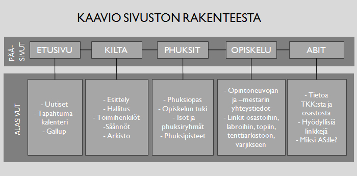

Harjoitustyössä toteutuetaan Automaatio- ja Systeemitekniikan killalle uusi sisällönhallintajärjestelmä ja nettisivusto. Sivuston nykyinen versio on osoitteessa http://as.tky.fi/. Uuden sivuston kehitysversiota pyöritetään osoitteessa http://aski.hut.fi/uusi/.
Sivusto sisältää muun muassa aktiivikillisteille ajankohtaisia uutisia, tapahtumakalenterin, ilmoittautumistoiminnon ja gallupin, sekä ulkopuolisille tietoa killasta. Projektin aluperäinen lähtökohta oli, että sivujen päivittämisen täytyy helpottua nykyisestä, joten sivustoon täytyy toteuttaa myös tehokkaat web-pohjaiset ylläpitotyökalut.
Projektin toteutus on demovaiheessa 21.4.2008 siinä vaiheessa, että navigointi, dynaaminen sivuhierarkia ja sivujen editointi toimivat. Arkkitehtuurikin alkaa vakiintua. Apumoduulit, kuten tapahtumakalenteri, ilmoittautuminen ja etusivun uutiset ovat vielä stattista mallisisältöä.
Olemme kartoittaneet käyttäjäryhmiä ja käyttötapoja henkilökohtaisen käyttökokemuksen ja epämuodollisten kyselyjen perusteella, ja päätyneet seuraaviin merkittäviin käyttäjäryhmiin: kiltalaiset, phuksit, abit, sponsorit ja ulkopuoliset. Seuraavassa pohditaan näiden ryhmien erityispiirteitä ja käyttötapoja.
Sivuston suurin käyttäjäryhmä ovat aktiiviset kiltalaiset. Tyypillisiä käyttötapauksia ovat:
Sivustoa katsotaan tyypillisesti laadukkaalla tietokoneella (ei kännykällä) kotoa tai työpaikalta. Käyttäjillä on tiedossa päämäärä, eivätkä he surffaile sivustolla sattumanvaraisesti. Tiedon täytyy siis olla helposti löydettävissä, eikä viihteellistä sisältöä tarvitse tyrkyttää samalla tavalla kuin sivustoilla, joiden tavoitteena on kerätä rahaa koukuttamalla käyttäjät.
Aktiivikiltalaisten käyttöön liittyvät seuraavat erityispiirteet:
Phuksit käyttävät sivustoa paljolti samalla tavalla kuin aktiivikiltalaiset, mutta heillä on omia erityistarpeita:
Käyttäjäryhmässä on myös se erityispiirre, että osa phukseista on vasta potentiaalisia aktiivikiltalaisia, ja siksi nettisivujen on annettava kiltatoiminnasta houkutteleva kuva. Esimerkiksi kuvavalinnoilla voidaan luoda positiivista mielikuvaa iloisesta yhdessätekemisestä, ja vastaavasti välttää kielteisiä stereotypioita.
Ulkomaalaisopiskelijat käyttäytyvät samoin kuin aktiivikiltalaiset tai phuksit, mutta tarvitsevat sisällön englanniksi. Lähtökohtaisesti kaikki sisältö käännetään ainakin lyhyesti.
Abit saattavat päätyä killan sivuille etsiessään opiskelupaikkaa. Käyttäjäryhmä on tärkeä, koska oikeantyyppisen opiskelija-aineksen haaliminen laitokselle on myös killan etu. Killan nettisivuilla on myös jonkinlainen vastuu siitä, minkälaisen kuvan abit saavat TKK:sta kokonaisuudessaan. Kuten phuksien tapauksessa, nettisivujen tulee luoda positiivista mielikuvaa ja hälventää teekkariutta koskeavia stereotypioita. Abit voivat hyvin todennäköisesti printata sivuja kerätessään materiaalia opiskelupaikoista, joten printtien ulkoasuun on oltava kelvollinen.
Sponsoreilla tarkoitetaan tahoja, joilta kilta anoo rahaa, jotka tulevat killan sivuille tarkistamaan, millaisesta ryhmästä on kysymys. Tämä käyttäjäryhmä on hyvin pieni, mutta erittäin tärkeä, koska kyse on rahasta. Koko sivuston on näytettävä ammattimaiselta ja uskottavalta. Tämä asettaa merkittäviä rajoituksia sivuston ulkoasuun, kun käyttäjäryhmä vieläpä kuuluu vanhempaan ikäluokkaan kuin aiemmin mainitut ryhmät. Ulkoasun on siis oltava riittävän konservatiivinen. Sponsorit ovat myös todennäköisiä printtaajia, ja siisteillä printeilla voidaan luoda ammattimainen vaikutelma.
Sivustolle voi eksyä esimerkiksi kiltalaisten vanhempia tai työnantajia, joille on annettava riittävän vakava kuva kiltatoiminnasta. Erityisesti on huolehdittava, että jokainen yksittäinen tunnistettava kiltalainen esiintyy positiivisessa valossa. Tämä vaikuttaa esimerkiksi valokuvien valintaan.
Sivustoa ylläpitää lähtökohtaisesti killan tiedottaja. Erityisesti ajankohtaisia uutisia päivitetään usein, joten käytön on oltava riittävän vaivatonta. Lisäksi sekalaiset hallituslaiset ja toimihenkilöt voivat päivittää oman vastuualueensa sivuja, joten ylläpitokäyttöliittymän on oltava melko helposti omaksuttavissa.
Vanhan sivuston sisältö olisi sellaisenaan melko kelvollista, mutta sitä kirjoitettaan uusiksi siinä määrin, että kurssin vaatimustaso täyttyy.Seuraavassa esitetään sivukohtainen erittely sivuston sisällöstä.
Sivuston rakenne tälläisenään toimii hyvin kohderyhmälle, koska siinä jokaiselle kohderyhmälle muodostuu pääsivu ja siihen liittyvät alasivut. Jokaisesta sivusta on tarkemmin alla.
Etusivu
Kuvapalkin valokuvat
Tapahtumakalenteri
Tietoa killasta
Hallitus
Toimihenkilöt
Arkisto
Phuksit
Abit (ja alasivut)
Opiskelun tuki, Phuksiopas, Isot, Pisteet (Phuksit-sivun alasivuja)
Opiskelu, alasivut
Webcam
Tapahtumailmoittautumiset
Ajankäyttösuunnitelma on esitetty alla olevassa taulukossa. Tarkoituksena on aloittaa korkean tason arkkitehtuurista ja kriittisistä toiminnoista, ja edetä hiljalleen perustoimintoihin ja viimeistelyyn.
| suunnitelma (h) | toteuma (h) | ||||||
|---|---|---|---|---|---|---|---|
| Valmiina viikolla | T | J | A | T | J | A | |
| Projektin pystytys (serveri, svn...) | 6 | 6 | 4 | 4 | 5 | 2 | 4 |
| Arkkitehtuurin suunnittelu | 7 | 5 | 5 | 3 | 3 | 3 | 2 |
| Yleinen suunnittelu | 8 | 3 | 3 | 3 | 4 | 2 | 3 |
| Korkean tason arkkitehtuurin protoilu | 9 | 16 | 4 | 0 | 11 | 0 | 0 |
| Navigoinnin toteuttaminen | 10 | 8 | 0 | 0 | 3 | 0 | 0 |
| Suunnitelmadokumentin kirjoittaminen | 11 | 6 | 6 | 6 | 10 | 3 | 6 |
| Alustava graafinen suunnittelu | 12 | 0 | 0 | 10 | 0 | 0 | 10 |
| Moduulien toiminta | 12 | 6 | 6 | 0 | _ | 2 | _ |
| Autentikointi ja alustavia admin-toimintoja | 13 | 8 | 8 | 0 | _ | 0 | _ |
| Staattiset sivut toimimaan | 13 | 2 | 2 | 5 | _ | 0 | _ |
| Cache | 14 | 0 | 6 | 0 | _ | 0 | _ |
| Ilmoittautuminen | 15 | 0 | 12 | 0 | _ | 0 | _ |
| Demon valmistelu | 16 | 6 | 0 | 0 | _ | 2 | _ |
| Gallup | 17 | 2 | 2 | 2 | |||
| Uutiset | 17 | 0 | 0 | 10 | |||
| Demon valmistelu | 18 | 0 | 4 | 0 | |||
| Edistyneet admin-toiminnot | 19 | 16 | 16 | 0 | |||
| Ulkoasun ja käyttöliittymän hiominen | 20 | 2 | 2 | 10 | |||
| Sisällön kirjoittaminen | 20 | 4 | 4 | 4 | |||
| Toteutusdokumentin kirjoittaminen | 21 | 6 | 6 | 6 | |||
Ulkoasu ja käyttöliittymä
Ulkoasu oli jo pitkälle kehitelty suunnitteluvaiheen dokumentissa ja muutoksia lopulliseen versioon tulee vähän. Leiskan alustava leikkely onnistui helposti ja sivun ulkoasun elementtien yhteiskoko saadaan n. 130-160 kilotavuun. Ulkoasusta tuli dynaaminen ja tyylitiedostosta saatiin melko yksinkertainen.
Sivuston käyttöliittymä vaikuttaa tässä vaiheessa toimivalta, ja tulemme laittamaan lopulliseen dokumenttiin yksityiskohtaisempia käyttökokemuksia.
Esimerkkisivut Liittäkää dokumenttiin kuvia sivuston sivuista eri selainohjelmilla katsottuna. Tarkoituksena on nähdä, miltä sivusto eri käyttäjille näyttää. Esimerkkisivujen kuvia saa palautuksessa olla enintään 8 kappaletta. Mukana tulisi olla * Sivuston pääsivu * Esimerkkejä eri sivutyypeistä (alisivukokonaisuudet tms.) * Aktiiviseen elementtiin liittyvä tai elementin sisältävä sivu * Yksi sivu, jossa on käytetty tyylimäärittelyjä (CSS) Valitkaa esimerkkiselaimiksi * Uudehko yleisesti käytössä oleva graafinen selain, kuten Internet Explorer. * Vanha graafinen selain, esimerkiksi Netscape 4.x * Muu yleisesti käytössä oleva selain, kuten Opera, Mozilla Firefox, Konqueror * Tekstipohjainen selain, kuten Lynx Myös muita selainohjelmia saa käyttää yllämainittujen lisäksi. (matkapuhelimet, Macin selaimet jne.) Käyttöliittymä ja graafinen ulkoasu Esittäkää toteutetut navigointiratkaisut ja muu käyttöliittymä. Esittäkää myös (esimerkiksi yllä olevien esimerkkikuvien perusteella) toteutunut graafinen ulkoasu. Aktiivinen elementti ja sivuston tekniikka (6 pistettä) Aktiivinen elementti Selostakaa aktiivisen elementin toteutus ja toiminta. Elementin lähdekoodi tulee sijoittaa hype-palvelimelle ja sijainti, joko URL tai hakemisto, tulee ilmoittaa dokumentissa. Lähdekoodin tulee olla kommentoitua ja assistenttien luettavissa. Arvioikaa myös valitsemanne toteutustavan sopivuutta tähän tarkoitukseen. Sivuston asennus ja tietoturva Kertokaa, mitä sivuston asennus uudelle palvelimelle vaatii ja kuinka se tehdään. Kertokaa myös, minkälaisia tietoturvakysymyksiä sivustossa ja erityisesti aktiivisessa elementissä on ilmennyt ja miten niihin on vastattu. WWW-tekniikka (4 pistettä) HTML Sivuston HTML-koodin (myös mahdollisen aktiivisen elementin tuottaman koodin) tulee olla kunnollista. Peruskoodin tulee olla joko HTML- tai XHTML-spesifikaation mukaista. Käytä soveltuvinta spesifikaatioiden versiota. Sivujen tulee pääsääntöisesti validoitua ilman virheitä. Jos virhettä ei jossain tilanteessa voi välttää, täytyy se voida perustella. Arvostelussa huomioidaan myös sivujen toimivuus eri selainohjelmilla. Liittäkää dokumenttiin pätkä HTML-listausta jostain näytetystä esimerkkisivusta. (Älkää kuitenkaan käyttääkö kahta dokumentin sivua enempää HTML-koodille!) Sisällyttäkää dokumenttiin lisäksi esimerkivalidointitulos W3C:n validaattoriohjelmalta tai -palvelulta. CSS-sivujen listaukset Antakaa esimerkki sivustossa käytetyn tyylisivun lähdekoodista. Kertokaa myös perustelut sille, missä olette tyylisivuja käyttäneet, ja mitä niillä on haluttu tehdä. Selainrajoitukset Esittäkää selvitys ja perustelut siitä, onko joku osa sivustosta selainriippuvaa. Kertokaa myös miten asia on ilmoitettu käytäjille ja miten muiden selainohjelmien käyttäjät on huomioitu (esimerkiksi vaihtoehtoisilla sivulla tms.) Projektin aikataulu (4 pistettä) Ajankäyttö ja aikataulu Esittäkää koko harjoitustyössä toteutunut ajankäyttö. Arvioikaa lyhyesti myös mahdollisia poikkeamia alkuperäisestä suunnitelmasta. Muuta arvosteltavaa Painotus (4 pistettä) Harjoitustyön painoitusvaihtoehtoja on kolme: sisällöntuotanto, sivuston ulkoasu+käyttöliittymä ja aktiivinen elementti. Ryhmän valitsema painotus nostaa toteutusvaiheessa vastaavan dokumentin kohdan arvostelun maksimipistemäärää 4:llä pisteellä. Yleisvaikutelma (6 pistettä) Yleisvaikutelmapisteillä arvioidaan kaikki sellainen työssä oleva, joka ei mahdu muihin kategorioihin. Esimerkiksi jos joku osa työstä on toteutettu erittäin ansioituneesti, jos toteutettava sivusto on erittäin toimiva, tai jos toteutusta on viety normaalia pidemmälle (testaus, käytettävyystestit jne.), nostaa tämä yleisvaikutelmaa.